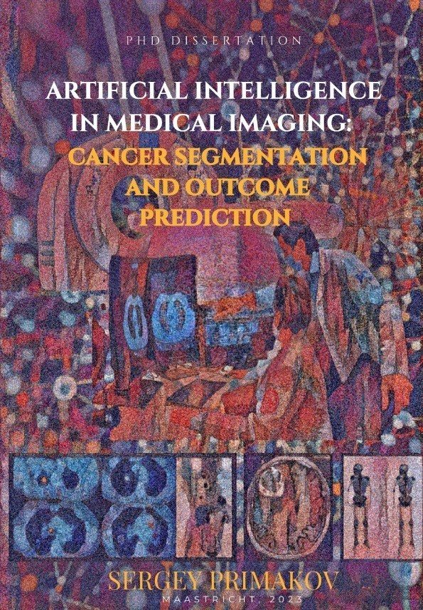
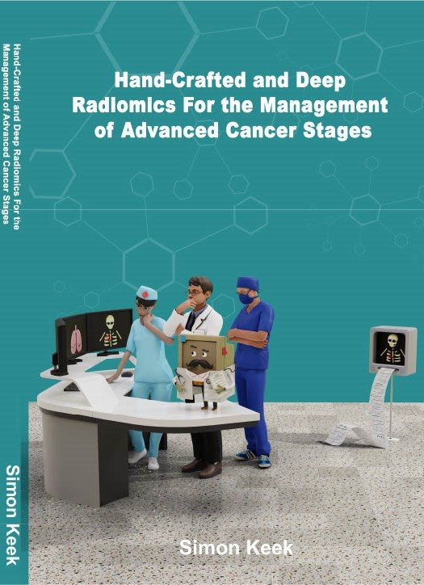
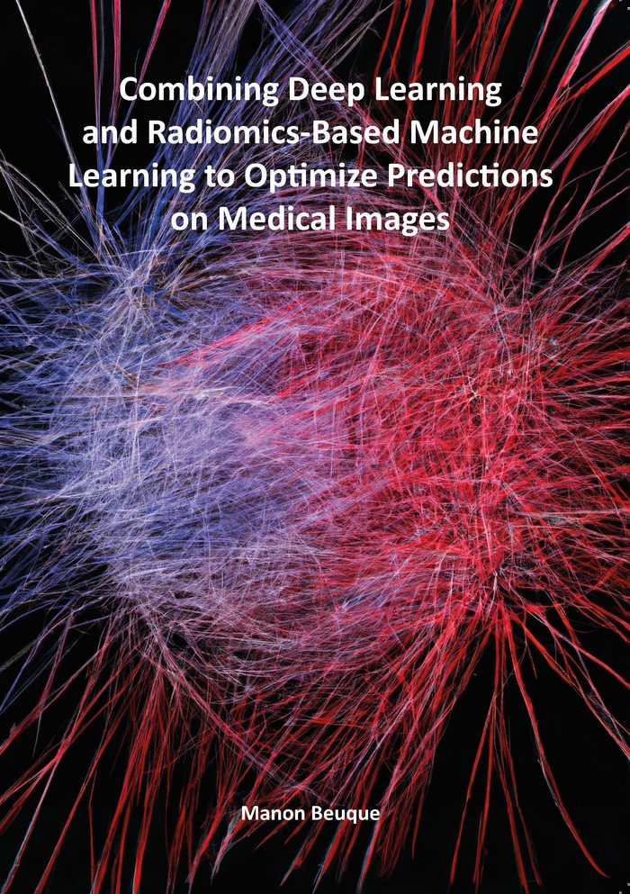
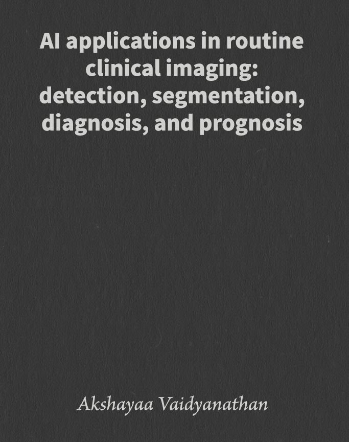
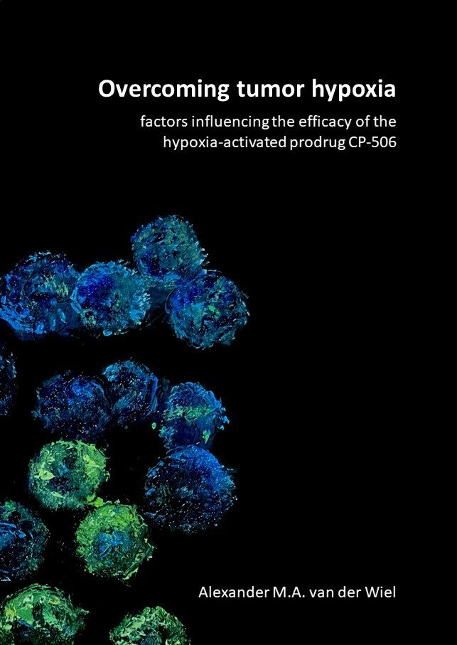
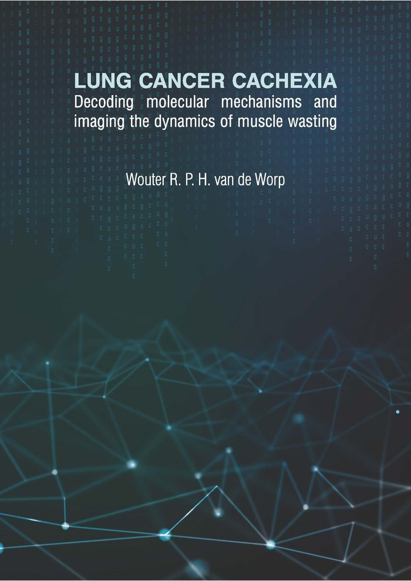
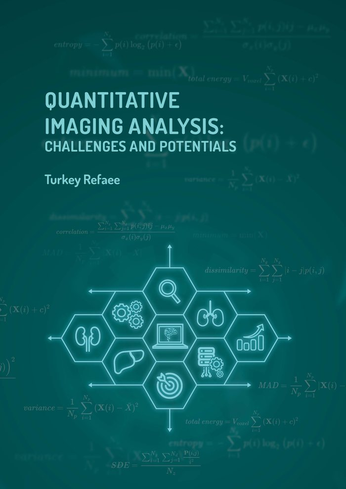
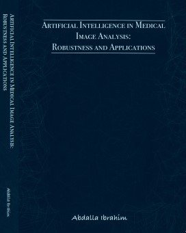
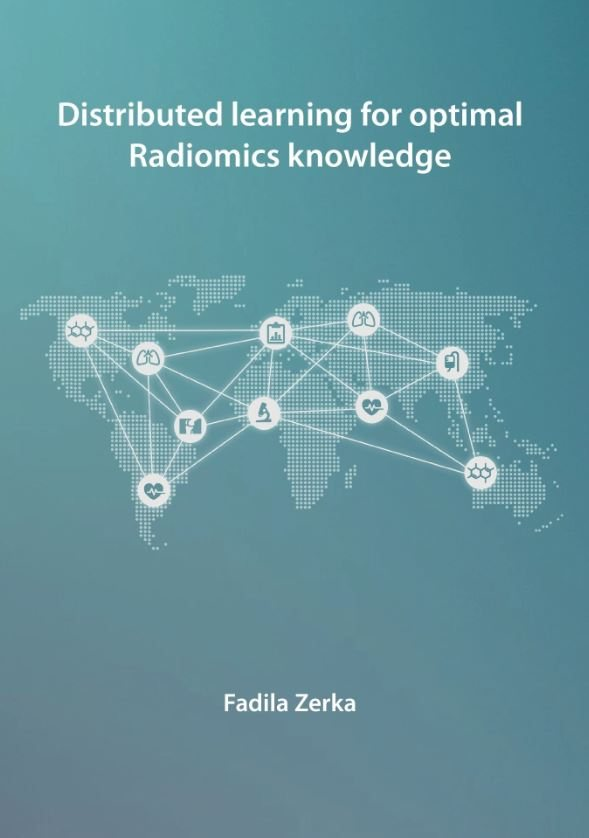
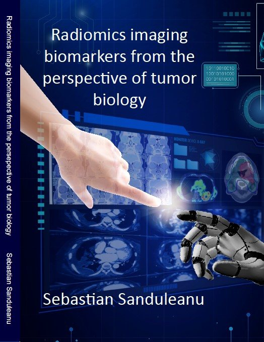

Thesis gallery
PhD theses, 2020 – 2026
PhD dissertations from the Department of Precision Medicine, arranged by year of graduation. Click a cover to open the thesis in a new tab.
2026

2025
2024
2023

Open PDF ↗Sergey Primakov
PhD thesis · 2023

Open PDF ↗Simon Andreas Keek
PhD thesis · 2023

Open PDF ↗Manon Beuque
PhD thesis · 2023

Open PDF ↗Akshayaa Vaidyanathan
PhD thesis · 2023

Open PDF ↗Alexander M. M. A. van der Wiel
PhD thesis · 2023
2022

Open PDF ↗Wouter R. P. H. van de Worp
PhD thesis · 2022

Open PDF ↗Turkey Abdullah Refaee
PhD thesis · 2022

Open PDF ↗Abdalla Khalil Ibrahim
PhD thesis · 2022

Open PDF ↗Fadila Zerka
PhD thesis · 2022

Open PDF ↗Sebastian Sanduleanu
PhD thesis · 2022
2021
2020
No theses match this filter.
Source: Maastricht University CRIS. Some PDFs are public versions with embargoed chapters left out.